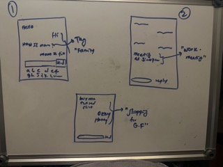
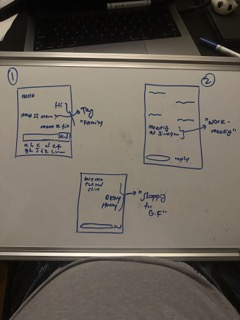
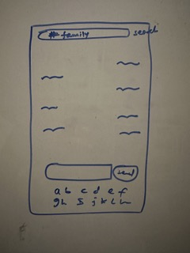
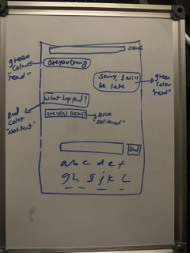
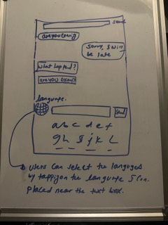
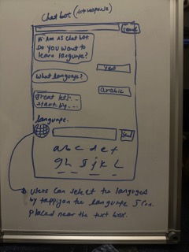

Idea Generation for chat
-
Need 1: Improved message organization and
searchability. Users need help managing their messages and finding
important information within their chats. To address this need, the
app could include features such as:
-
Idea 1: A tagging system that allows users to
categorize their messages and easily find them later. Users could
create their custom tags or use pre-defined tags such as "work,"
"family," or "shopping." Tags could be color-coded for easy visual
recognition.
-
Idea 2: A search function that allows users to
search for specific keywords within their messages. The app could use
machine learning algorithms to suggest relevant search terms based on
the user's previous search history.
-
The user can longpress the message and store it using any tag they
want. later they can use the #tag and extract those messages easily
from the search bar.



-
Need 2: Improved message delivery and read receipts.
Messaging app users want to know if the recipients have received and
read their messages, especially in group chats or for time-sensitive
messages. To address this need, the app could include features such
as:
-
Idea 1: A "message sent" and "message delivered"
status indicator that appears next to each message. This will let
users know if their messages have been successfully sent and delivered
to the recipient's device.
-
Idea 2: A read receipt feature that shows when the
recipient has read the message. This could be useful for
time-sensitive or important messages and help avoid misunderstandings
or confusion.
-
By incorporating these features, the messaging app could improve the
communication experience for users by providing more visibility into
message delivery and read status. By keeping users informed about the
status of their messages; I can reduce their anxiety and frustration
and increase their trust and confidence in the chat app. this leads to
a better user experience and higher user satisfaction.
The message color changes to indicate the status of it. Green:
delivered and read, yellow: delivered, but not yet read, Blue:
inprogress, Red: not delivered,

-
Need 3: Multilingual messaging for global
communication. Messaging app users communicate with people from
different countries and regions and may struggle with language
barriers. To address this need, the app could include features such
as:
-
Idea 1: An in-built translation tool allowing users
to translate real-time messages. Users could select the source and
target languages, and the app would automatically translate the
message as it is sent or received. The translated message could be
displayed alongside the original message for easy comparison.
-
Idea 2: A language learning tool that allows users
to practice and improve their language skills within the messaging
app. Users could select the language they want to learn, and the app
could provide them with a variety of language-learning materials, such
as vocabulary lists, grammar exercises, and conversation starters.
Users could also connect with native speakers of the language they are
learning for language exchange.
-
By incorporating these features, the messaging app could better
support multilingual communication and improve the overall user
experience for users who communicate across language barriers. The
in-built translation tool could help users quickly understand and
communicate with others who speak different languages, while the
language learning tool could provide a fun and convenient way for
users to improve their language skills.
-
The user can select from the list of languages by selecting the
language icone that's placed next to the message box. Furthermore,
they can select the AI enabled chat bot and start a conversation in
thier prefered language. This helps the users learn a new language

